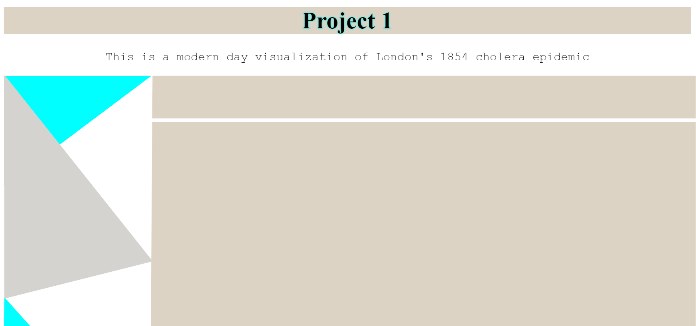
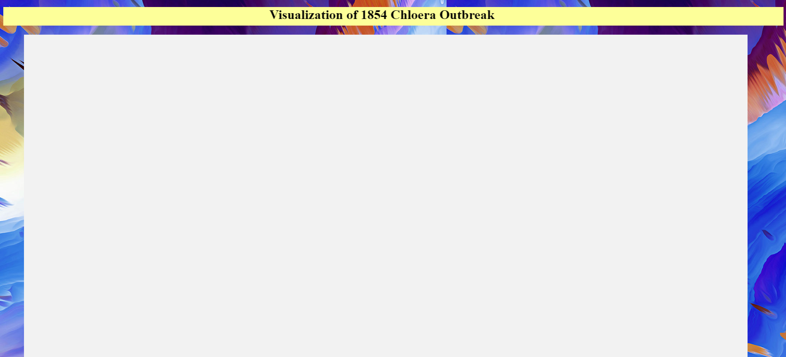

Hello and welcome to my first visualization project of the semester! This was meant to be an interactive visualization of John Snows Cholera outbreak, however I faced many challenges and setbacks. Here is documentation of my design process:
Here is my figma prototype for the design:
Here is design attempt number 1, built with html and svg: 
Here is design attempt number 2, built with html: 
My down fall of this project was that I spent too much time trying to learn new software and programs constantly. I would switch between vizhub,visual studio code, dreamweaver, p5js, and a couple of other programs. I was never satisfied with what one program had to offer. I was constantly scratching ideas and starting over again. I had the worst time trying to figure out how to create John Snow's map in D3. I referenced our text book, specifically pages 37-44, looked through countless github explanations of fetching and could not achieve the result. So I thought about generative art and converted my json filed into an excel sheet. From there my coordinates were laid out and I typed code by hand in p5js to create the map. This worked and I then went over my result with a design app called krita to make it look nicer. However, this portion needed to be done by d3 so I scratched my p5js and krita designs. If I could go back I would have been more focused on the visualization portion rather than trying to learn many different programs. I also would ask more questions to fetching a json file.